First CBun App
This document teach you how to build your very first CBun App. Make sure that you already read Introduction and therefore you are familiar with the basic concepts of the CBun App development. Whatever you learn at developer.android.com can be also applied for the CBun Apps.
The CBun App development process is very similar to the development of any other Android application, except the following additional requirements for the CBun App:
The KR Android API library has to be listed in CBun App dependencies.
There has to be at least one entry-point in form of KRFragment in CBun App.
CBun App description needs to be provided via bundle.xml file.
Generated APK and bundle.xml are packed into a cbun file.
Prerequisities
First of all, you need some IDE (integrated development environment). Android Studio is the official and recommended IDE for the development of CBun Apps. It can be installed on Windows, macOS and Linux based operating systems. You can download it for free at this link and install it at your PC or laptop.
Note
We use Android Studio Dolphin|2021.3.1 Patch 1 for the purposes of this tutorial. It is recommended to use the latest version of Android Studio, just beware that the UI may differ.
You will also need to download the latest version of the KR Android API library: api-external.aar
Although you can test the basic functionality of your CBun App in Android emulator (available via Android Studio) or on any Android 10 device (ideally with 10” Full HD screen), eventually you will need the real robot to test the CBun App in the production environment.
Create New Project
Android Studio starts with the following welcome screen. Click New Project button to create your new Android studio project.
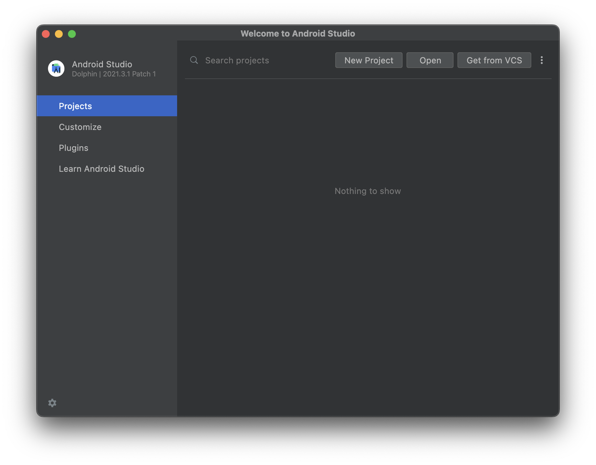{kind=link}
Although the final CBun App does not require any activity, you will need one for standalone UI test. Select the Empty Activity template and click the Next button.
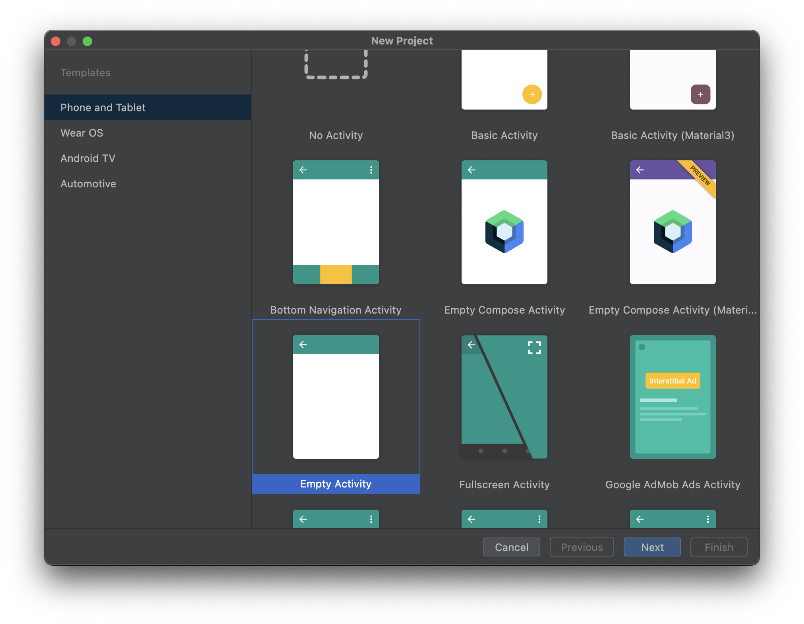{kind=link}
Fill in the name of your project, the package name (in form of <domain>.<project_name>) and select the language (this tutorial uses Kotlin). Choose API 28: Android 9.0 (Pie) as a minimum SDK in order to support all generations of our robots. Finally click the Finish button.
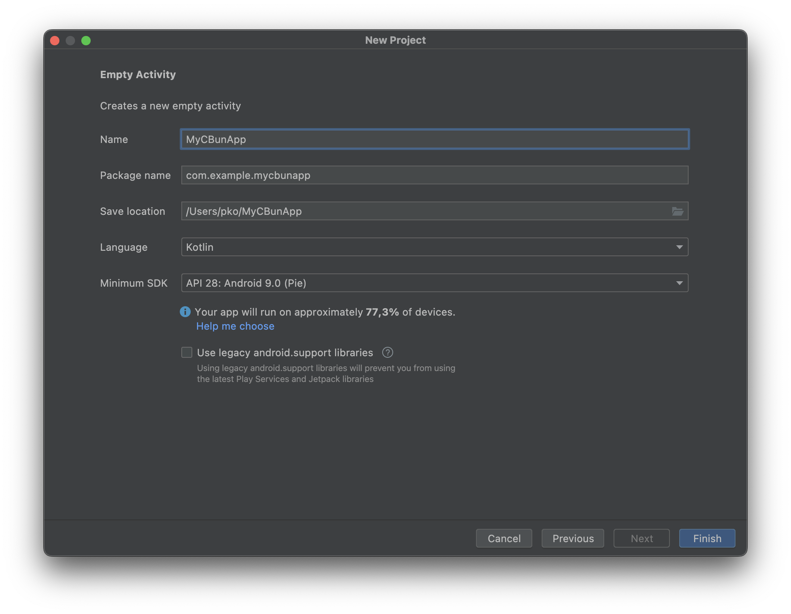{kind=link}
Configure Project Structure
Once the new project is created, you need to configure the gradle build tool and define project’s dependencies, ie. the libraries that are used to build the CBun App. This step also describes how to add Jetpack Compose support to your project. All of that can me managed either via File -> Project Structure wizzard or by direct modification of appropriate build.gradle files. This tutorial demonstrates both ways.
To ensure the full compatibility with the Teach Pendant host app, the Gradle and Gradle Plugin versions of your CBun App project have to match the target robot SW version (see the Releases). Configure the gradle via the Project tab in the Project Structure wizzard. Once the gradle is configured, click the Apply button followed by the OK button.
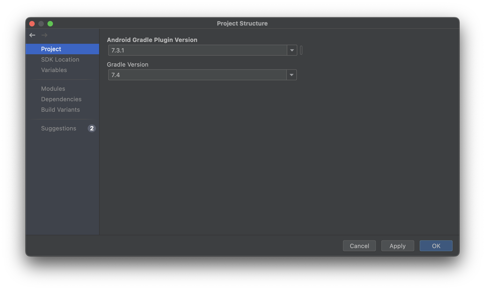{kind=link}
Now add the downloaded KR Android API library to your project by placing the api-external.aar file into the libs folder inside the app module directory.
MyCBunApp
├── app
│ ├── libs
│ │ └── api-external.aar
│ └── ...
├── build.gradle
├── gradle
│ └── ...
├── gradle.properties
├── gradlew
├── gradlew.bat
├── local.properties
└── settings.gradle
Next tell your Android project to use this dependency. In order to add new dependencies, open the app module build.gradle file.
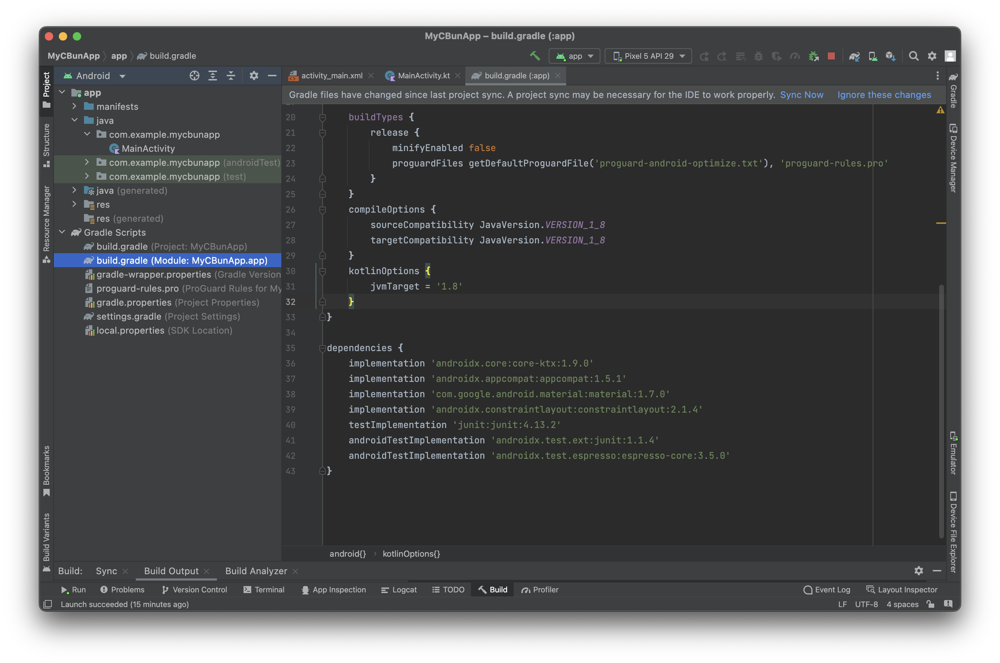{kind=link}
Add api files('libs/api-external.aar') entry into the dependencies section. Also add the following Jetpack Compose dependencies.
implementation 'androidx.compose.ui:ui:1.3.1'
implementation 'androidx.compose.material:material:1.3.1'
In order to support Jetpack Compose, you need to mark its usage and define the Kotlin compiler version. Add the following code to the android section in your app module build.gradle.
buildFeatures {
compose true
}
composeOptions {
kotlinCompilerExtensionVersion '1.3.1'
kotlinCompilerVersion '1.5.21'
}
{kind=link}
You might also need to adjust the Kotlin gradle plugin version in project build.gradle.
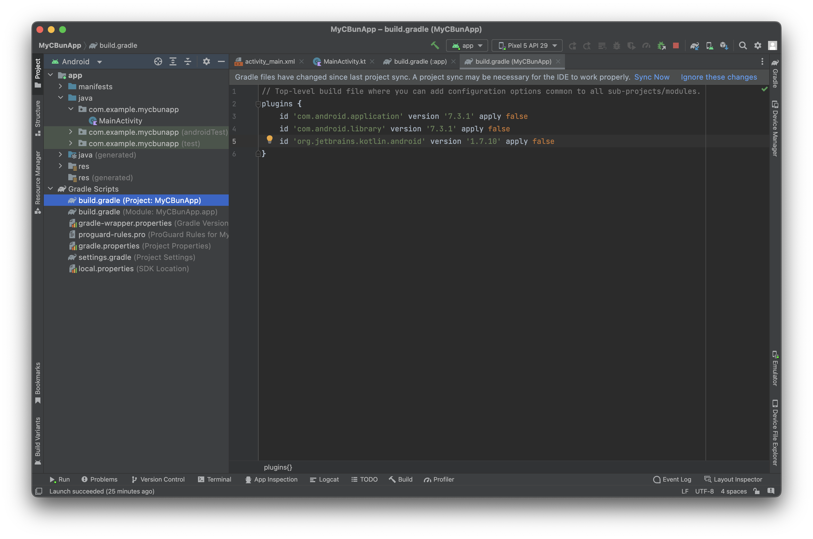{kind=link}
Finally click the Sync Now button to apply all modifications.
Note
Make sure that dependencies, Kotlin compiler and Kotlin gradle plugin are compatible with the target robot SW version (see the Releases).
Add KRFragment
Once the project is configured, add your first KRFragment entry-point. To add new class to your project, right-click the class target package (in your case com.example.mycbunapp) and select New followed by Kotlin Class/File from the popup menu.
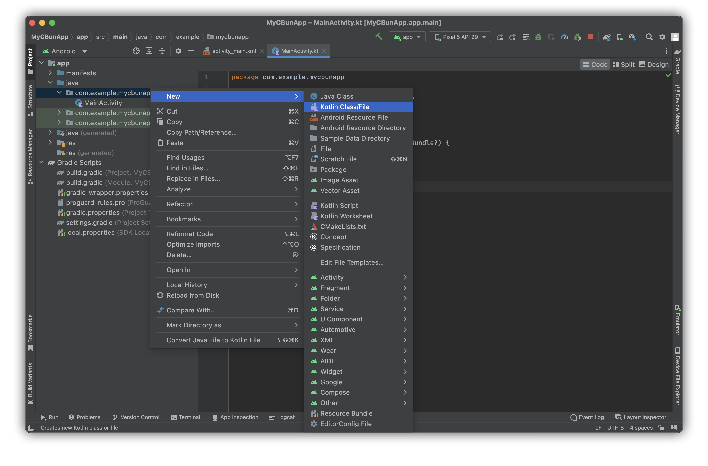{kind=link}
Enter MyFragment as a class name and press Enter.
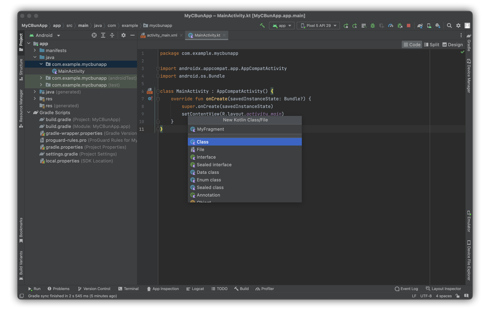{kind=link}
Once the MyFragment.kt class is created, you need to modify its content. First of all, this class has to extend the KRFragment base class. Next you need to implement the onCreateView method to provide your own UI. This method has to return a view, that will be rendered on the screen. In this tutorial, you will use Jetpack Compose, therefore the method has to return ComposeView. Finally set the content of the view to Text composable with “Hello World!” message.
package com.example.mycbunapp
import android.os.Bundle
import android.view.LayoutInflater
import android.view.View
import android.view.ViewGroup
import androidx.compose.material.Text
import androidx.compose.ui.graphics.Color
import androidx.compose.ui.platform.ComposeView
import androidx.compose.ui.unit.sp
import com.kassowrobots.api.app.fragment.KRFragment
class MyFragment : KRFragment() {
override fun onCreateView(
inflater: LayoutInflater, container: ViewGroup?,
savedInstanceState: Bundle?
): View {
return ComposeView(requireContext()).apply {
setContent {
Text("Hello World!",
color = Color.Blue,
fontSize = 30.sp
)
}
}
}
}
Run CBun in Emulator
Although this code could be already packed into CBun and installed on the real robot, it would not be able to test it as a standalone Android application. The reason is, that there is no activity (ie. the entry-point of the standalone Android application) that would attach your fragment to the screen. Therefore you need to modify the layout of your empty activity (activity_main.xml). A fragment needs some container to be placed into. In this tutorial, you will use the FrameLayout container. Set the container width and height to match_parent and do not forget to assign an ID.
<?xml version="1.0" encoding="utf-8"?>
<FrameLayout xmlns:android="http://schemas.android.com/apk/res/android"
android:id="@+id/container"
android:layout_width="match_parent"
android:layout_height="match_parent"/>
Now modify the MainActivity.kt class to add a new instance of MyFragment to the container in onCreate method (ie. once the activity is created).
package com.example.mycbunapp
import android.os.Bundle
import android.view.View
import android.view.Window
import androidx.appcompat.app.AppCompatActivity
class MainActivity : AppCompatActivity() {
override fun onCreate(savedInstanceState: Bundle?) {
super.onCreate(savedInstanceState)
setFullscreen()
setContentView(R.layout.activity_main)
supportFragmentManager
.beginTransaction()
.add(R.id.container, MyFragment())
.commit()
}
private fun setFullscreen() {
requestWindowFeature(Window.FEATURE_NO_TITLE)
window.decorView.systemUiVisibility = (View.SYSTEM_UI_FLAG_LAYOUT_STABLE
or View.SYSTEM_UI_FLAG_HIDE_NAVIGATION
or View.SYSTEM_UI_FLAG_FULLSCREEN
or View.SYSTEM_UI_FLAG_IMMERSIVE_STICKY)
}
}
Open Tools -> Device Manager to configure an emulated virtual device for the standalone application test. Click Create device button to add new virtual device.
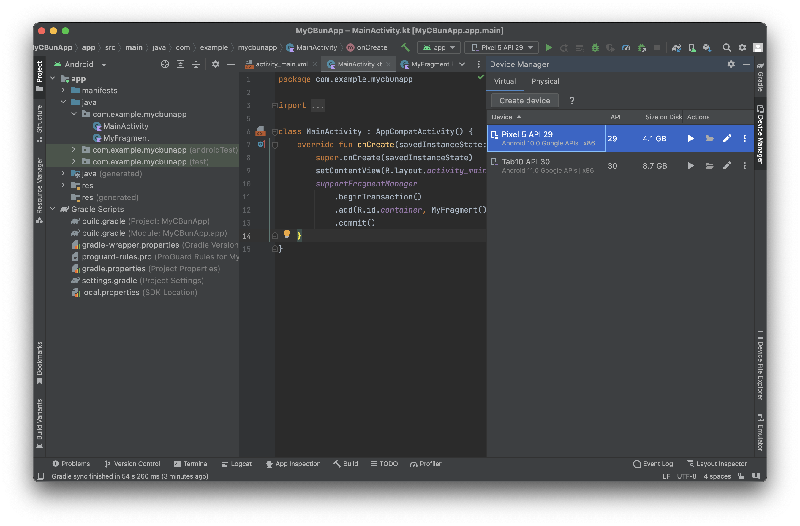{kind=link}
Click the New Hardware Profile to create new emulator profile, that will match the UI behaviour of the real robot in terms of the resolution and the density of pixels.
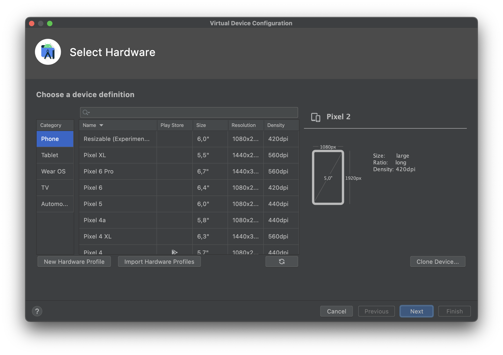{kind=link}
Enter the device name (for example CBun App Emulator) and configure the emulator resolution (932 x 987 px) and screen size (6.1”) to fit the CBun App container in the Teach Pendant host app. The click the Finish button.
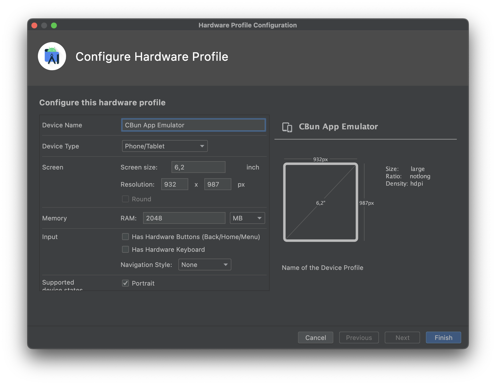{kind=link}
Once the new hardware profile is added, select it and click the Next button.
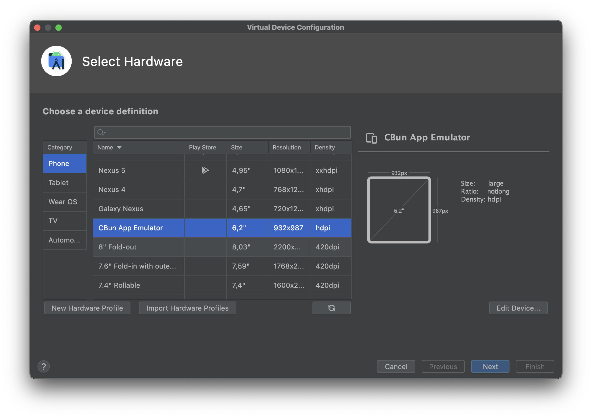{kind=link}
Select the Q system image, since Android 10 ensures compatibility with the highest amount of our robots. Then click the Next button.
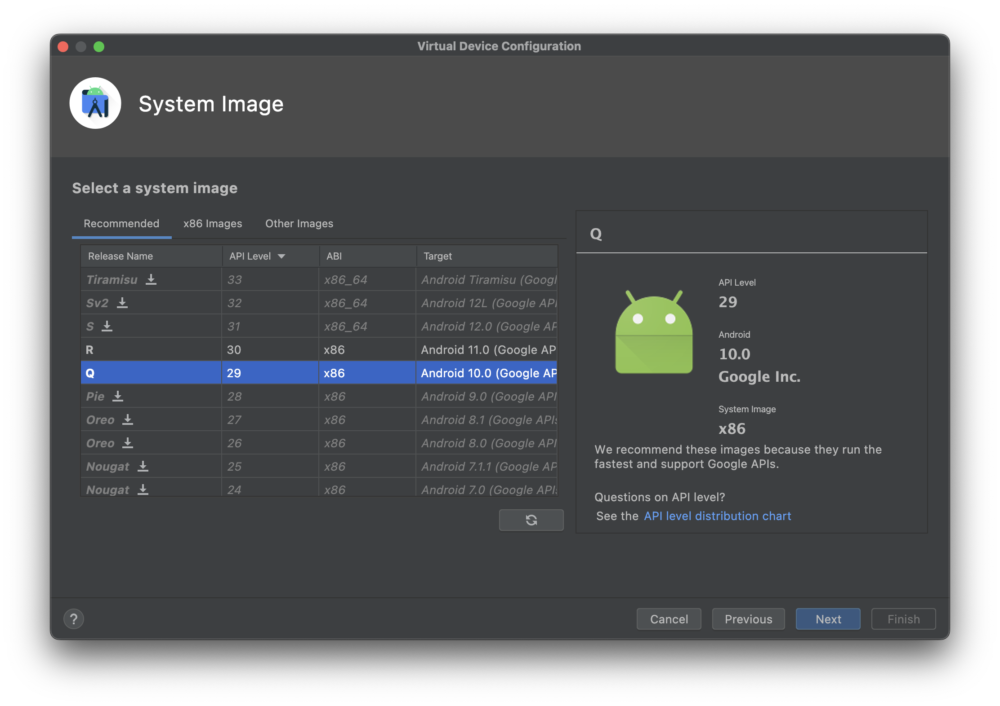{kind=link}
Check the device configuration, enter the AVD Name and click the Finish button.
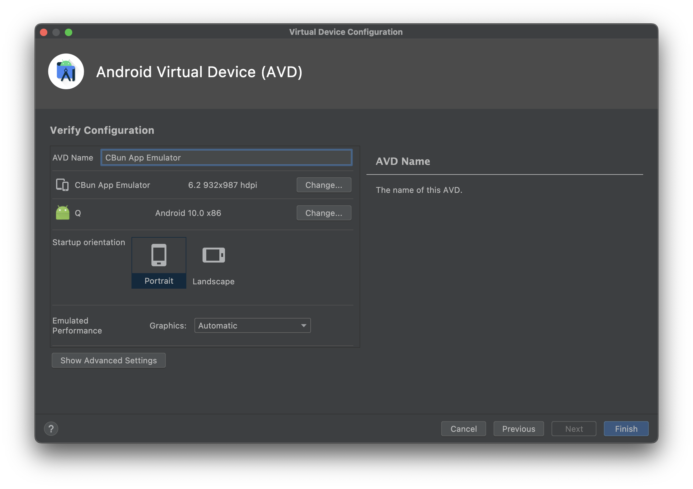{kind=link}
Finally click the run app button (or Ctrl-R shortcut) to launch your application in the emulator.
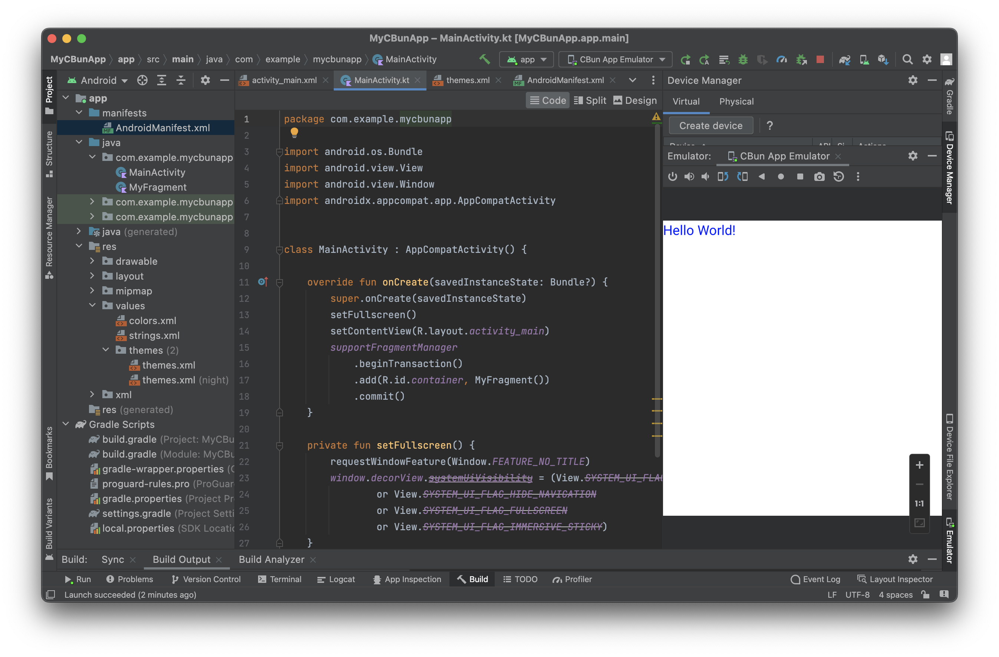{kind=link}
Define bundle.xml
In order to run the CBun App on the real robot, the CBun has to contain a description in form of bundle.xml file. The bundle.xml tells the robot, which CBun Apps can be launched and which fragment entry-points are available for this purpose.
Display your project files in Project view rather than the default Android view. Right-click the project root folder MyCBunApp and add the new bundle.xml file.
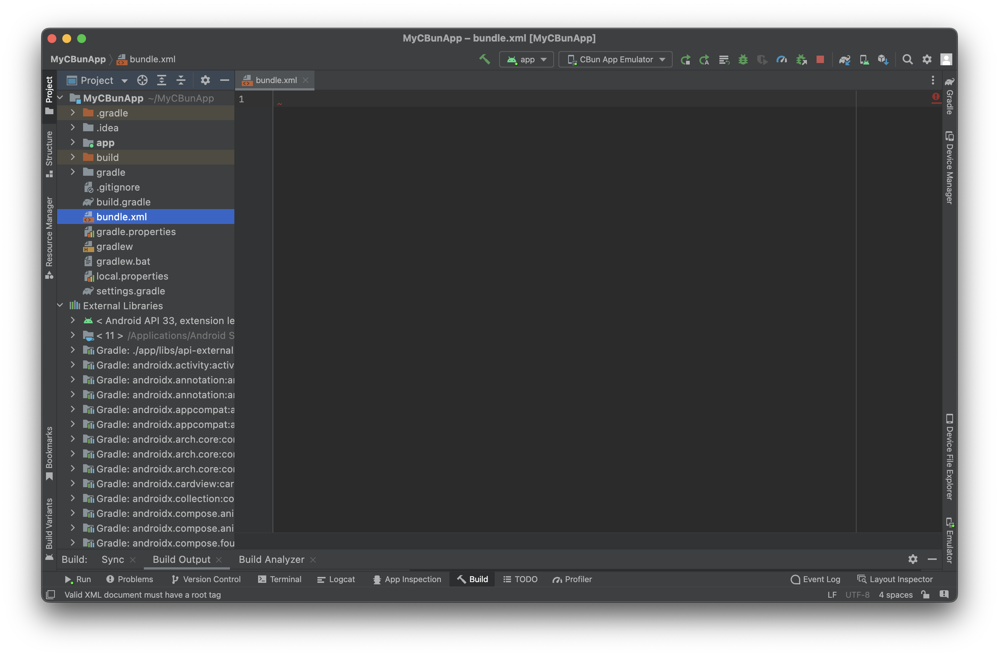{kind=link}
Be careful while defining the bundle.xml file, since its content has to be perfectly aligned with the configuration of the Android project, ie. the package attribute of application element has to match the package of your Android project (in your case it is com.example.mycbunapp). Also the name attribute of fragment element has to represent the path to your KRFragment relatively to the package (in your case it is .MyFragment).
Note
If you join the package application attribute with the name fragment attribute, it matches the fully qualified name of your KRFragment, ie. com.example.mycbunapp.MyFragment.
Use the following intent-filter to make the CBun App accessible from the Workcell tool:
<intent-filter>
<action name="com.kassowrobots.intent.action.MAIN"/>
<category name="com.kassowrobots.intent.category.LAUNCHER"/>
</intent-filter>
Finally, the apk attribute in application element has to represent the path to the output APK in your CBun (see Assemble CBun section). Your final bundle.xml file may look like this:
<?document type="cbunxml" version="1.0" ?>
<bundle name="MyFirstCBun" version="1.0.0" path="" type="custom">
<label>My First CBun</label>
<author>Kassow Robots</author>
<description>My first CBun implemented in Kotlin using Jetpack Compose.</description>
<application
package="com.example.mycbunapp"
label="My CBun App"
apk="/mycbunapp.apk">
<fragment
name=".MyFragment"
debuggable="true">
<intent-filter>
<action name="com.kassowrobots.intent.action.MAIN"/>
<category name="com.kassowrobots.intent.category.LAUNCHER"/>
</intent-filter>
</fragment>
</application>
</bundle>
Assemble CBun
First of all, you need to build the APK. In order to do so, click the Build -> Build Bundle(s) / APK(s) -> Build APK(s). The APK file will be accessible at <yourpath>/MyCBunApp/app/build/outputs/apk/debug/app-debug.apk path.
Once the APK is generated and bundle.xml is defined, it can be assembled into the CBun file. The CBun file is simply a tarball of the package with the following structure:
CBun
├── bundle.xml
└── mycbunapp.apk
This document demonstrates, how to manually assemble CBun using bash. Run the following commands from the root of your Android project.
mkdir assemble
cd assemble
mkdir MyFirstCBun
cp ../bundle.xml ./MyFirstCBun
cp ../app/build/outputs/apk/debug/app-debug.apk ./MyFirstCBun/mycbunapp.apk
tar -cvzf ../myfirstcbun.cbun -C ./MyFirstCBun .
cd ..
rm -rf assemble
Finally, the myfirstcbun.cbun file is generated in the root folder of your Android project.
Run CBun on Real Robot
There are two ways for installing a 3rd party CBun. The CBun can be installed either from the USB flash drive or from the Google Drive. For the purpose of this tutorial, put your CBun onto a USB stick and plug the stick to the robot cabinet. Go to Settings -> CBuns and click the + button. Select your USB device and click the myfirstcbun file.
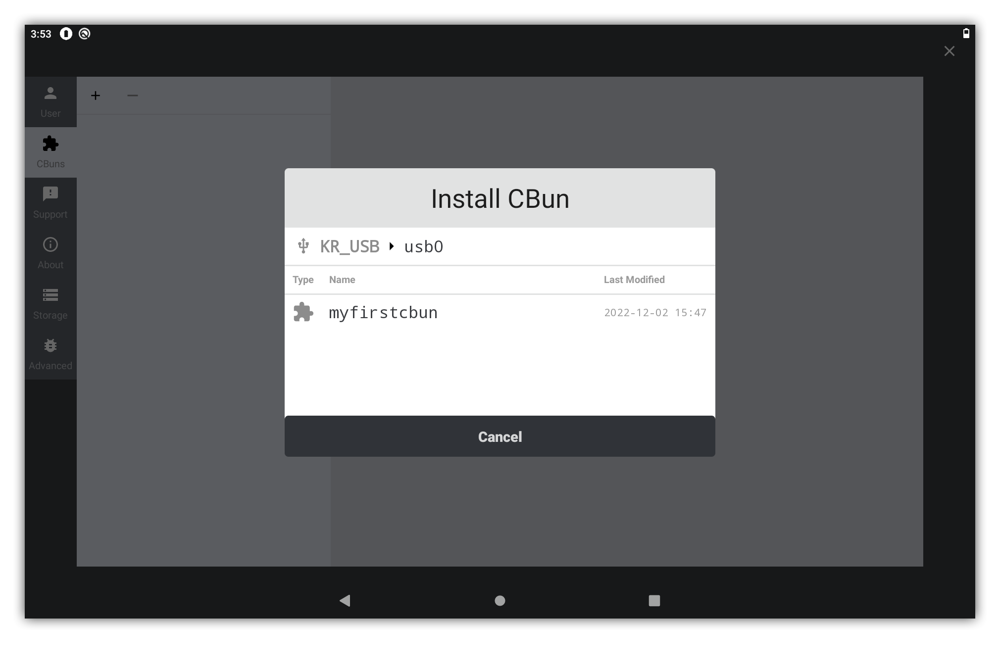{kind=link}
Confirm the installation of your CBun by clicking the Install button.
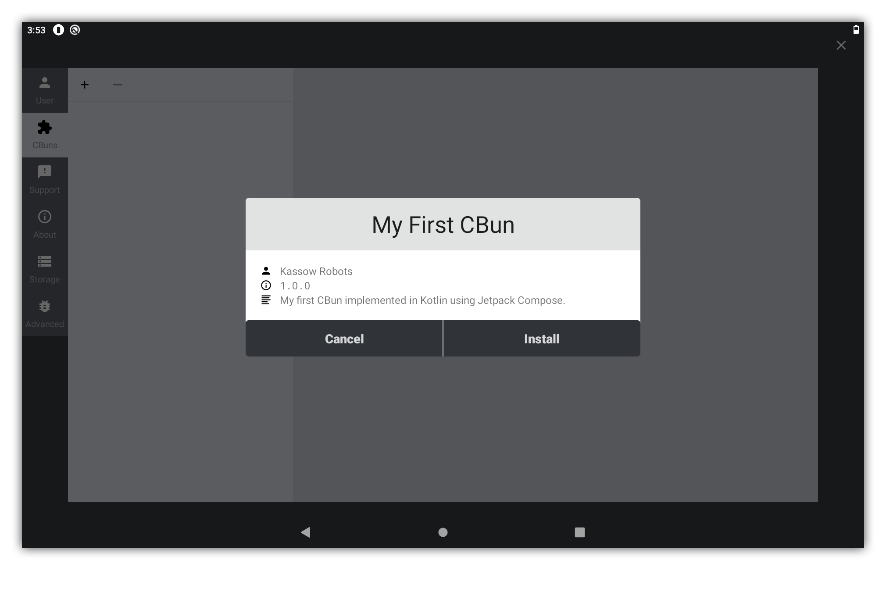{kind=link}
Go to Workcell tool and click My CBun App item in CBun Apps section to launch your first CBun App.
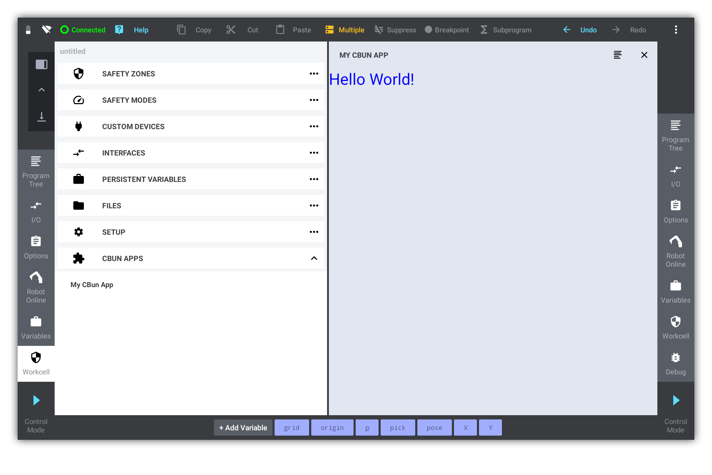{kind=link}